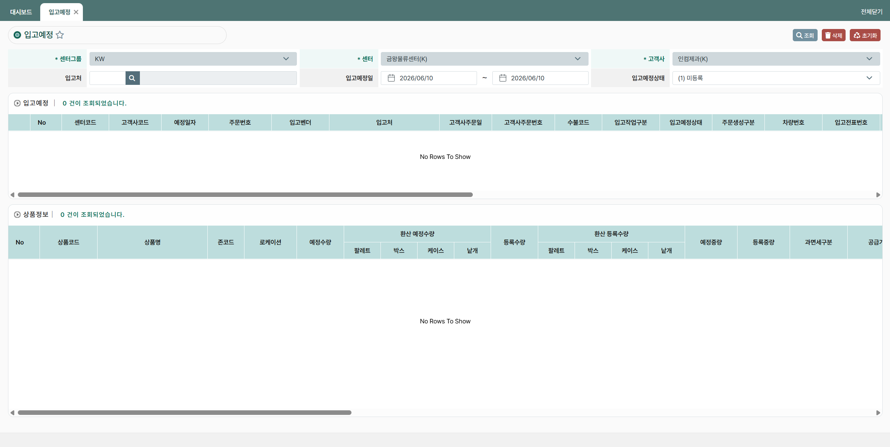
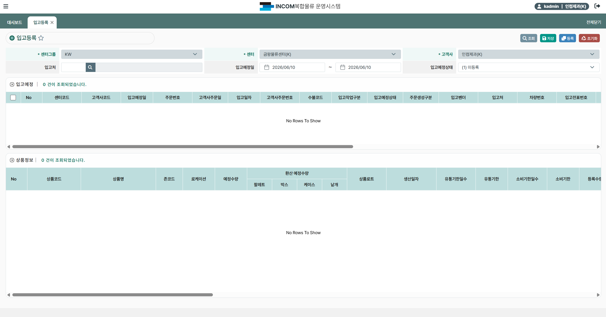
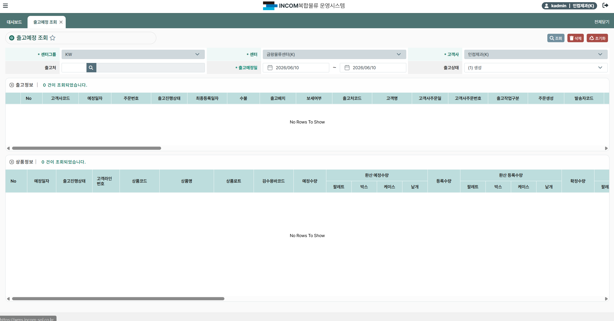
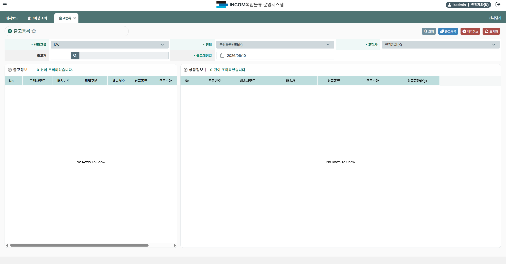
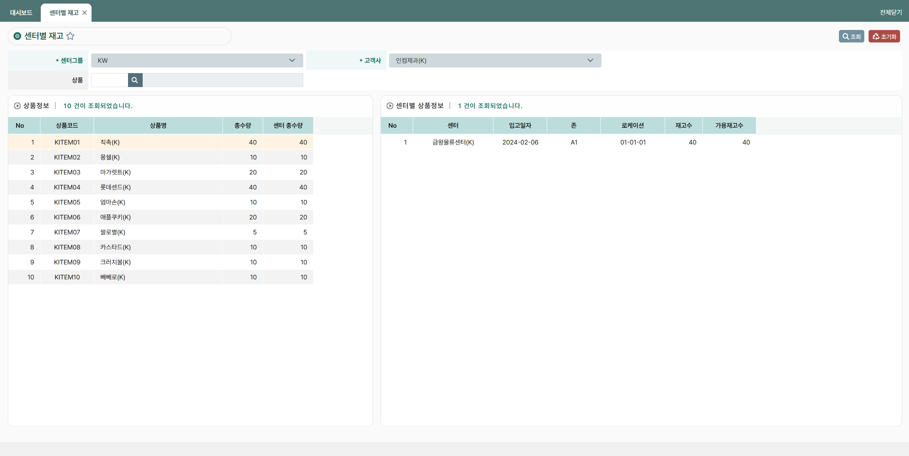
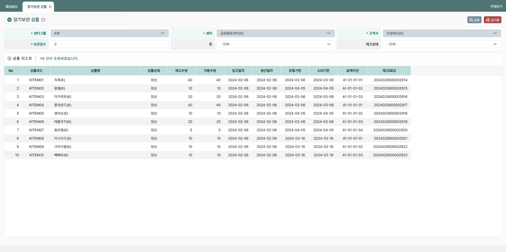
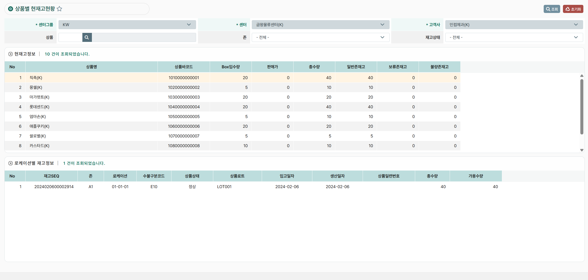
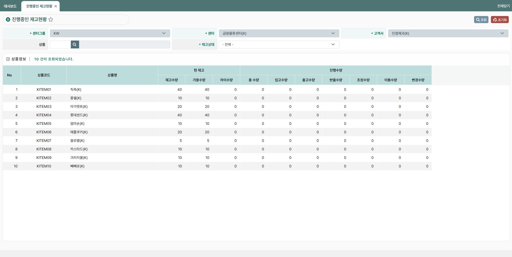

← Portfolio로 돌아가기
프로젝트 개요
입고·출고·재고 등 창고 내 물류 흐름 전반을 통합 관리하는
WMS(Warehouse Management System) 고도화 프로젝트입니다.
센터그룹·센터·고객사 기반의 입고예정 및 입고등록, 출고예정 조회 기능을 개발하고,
로케이션·존 단위의 실시간 재고 현황 및 장기보관 상품 관리 기능을 구현하였습니다.
또한 상품별 현재고현황 및 진행중인 재고현황 화면을 구축하여
입고·출고·이동·조정 등 다양한 재고 변동 흐름을 한눈에 파악할 수 있도록 지원하였습니다.
기술 스택
Java
Vue.js
Spring Boot
Oracle
MyBatis
REST API
GitLab
담당 업무
- 입고예정 등록·수정·조회 기능 개발
- 입고등록 화면 및 상품정보 연계 기능 개발
- 출고예정 조회 화면 개발
- 센터별 재고 조회 화면 개발 (좌우 분할 연계 구조)
- 장기보관 상품 조회 기능 개발
- 상품별 현재고현황 및 로케이션별 재고 상세 조회 기능 개발
- 진행중인 재고현황 조회 기능 개발
- Vue.js + Spring Boot 기반 REST API 개발 및 Oracle 쿼리 작성
주요 기능
입고예정 관리
센터그룹·센터·고객사 조건으로 입고예정 목록을 조회하고 등록·수정하는 기능을 구현하였습니다.
- 센터그룹·센터·고객사·입고처 기반 입고예정 검색 기능 구현
- 입고예정일 기간 조건 및 입고예정상태 필터 적용
- 센터코드·고객사코드·주문번호·입고벤더·입고처 등 상세 컬럼 목록 조회
- 수불코드·입고작업구분·주문생성구분·차량번호·입고전표번호 정보 관리
- 상단 입고예정 목록과 하단 상품정보(환산 예정수량·등록수량) 연계 조회
- 팔레트·박스·케이스·낱개 단위 환산 수량 관리 기능 구현
입고등록 관리
입고예정 데이터를 기반으로 실제 입고 처리 및 상품 정보를 등록하는 기능을 개발하였습니다.
- 입고예정 목록에서 대상 선택 후 입고 등록 처리 기능 구현
- 입고일자·고객사주문일·고객사주문번호 등 입고 상세 정보 관리
- 상품코드·상품명·존코드·로케이션·예정수량 기반 상품 정보 등록
- 상품로트·생산일자·유통기한일수·유통기한·소비기한일수·소비기한 입력 관리
- 환산 예정수량(팔레트·박스·케이스·낱개) 등록수량 대비 처리 기능 구현
- 저장·등록·초기화 버튼 연계 워크플로우 구현
출고예정 조회
센터·고객사 조건으로 출고예정 목록과 상품 상세 정보를 조회하는 기능을 개발하였습니다.
- 센터그룹·센터·고객사·출고처 기반 출고예정 검색 기능 구현
- 출고예정일 기간 조건 및 출고상태 필터 적용
- 고객사코드·주문번호·출고진행상태·출고배치·보세여부·출고처코드 목록 조회
- 고객사주문일·고객사주문번호·출고작업구분·발송자코드 정보 관리
- 하단 상품정보에서 고객라인번호·상품코드·상품명·검수용바코드 연계 표시
- 환산 예정수량·등록수량(팔레트·박스·케이스·낱개) 및 확정수량 관리
센터별 재고 조회
상품별 총 재고 현황과 센터·로케이션 단위 상세 재고 정보를 연계 조회하는 기능을 구현하였습니다.
- 센터그룹·고객사·상품 조건 기반 재고 검색 기능 구현
- 좌측 상품정보(상품코드·상품명·총수량·센터총수량) 목록 조회
- 우측 센터별 상품정보(센터·입고일자·존·로케이션·재고수·가용재고수) 연계 표시
- 상품 선택 시 해당 상품의 센터·로케이션별 재고 상세 즉시 조회
장기보관 상품 조회
보관일수 기준으로 장기 보관 중인 상품 목록과 재고 현황을 조회하는 기능을 개발하였습니다.
- 센터그룹·센터·고객사·존·재고상태 조건 기반 검색 기능 구현
- 보관일수 기준값 입력으로 장기보관 상품 필터링 기능 구현
- 상품코드·상품명·상품상태·재고수량·가용수량 목록 조회
- 입고일자·생산일자·유통기한·소비기한·로케이션·재고SEQ 상세 정보 표시
상품별 현재고현황
상품별 전체 재고 현황 및 로케이션별 상세 재고 정보를 조회하는 화면을 개발하였습니다.
- 센터그룹·센터·고객사·상품·존·재고상태 다중 조건 검색 구현
- 상품명·상품바코드·Box입수량·판매가·총수량 현재고 정보 표시
- 일반존재고·보류존재고·불량존재고 유형별 재고 분류 조회
- 하단 로케이션별 재고정보(재고SEQ·존·로케이션·수불구분코드·상품상태·LOT) 상세 표시
- 입고일자·생산일자·상품일련번호·총수량·가용수량 항목별 확인 기능 구현
진행중인 재고현황
현재 재고 수량과 입고·출고·반출·조정·이동·변경 등 진행 중인 재고 변동 현황을 조회하는 기능을 구현하였습니다.
- 센터그룹·센터·고객사·상품·재고상태 조건 기반 조회 기능 개발
- 상품코드·상품명별 현 재고(재고수량·가용수량·차이수량) 집계 표시
- 진행수량(총수량·입고수량·출고수량·반출수량·조정수량·이동수량·변경수량) 통합 조회
- 10건 이상 상품 데이터 목록 조회 및 재고 변동 흐름 실시간 파악 지원
주요 화면
입고예정 관리

센터그룹·센터·고객사·입고처 조건으로 입고예정 목록을 조회하는 화면입니다.
상단 입고예정 목록과 하단 상품정보(환산 예정·등록수량)를 분리하여 연계 표시합니다.
입고등록 관리

입고예정 목록을 선택하여 실제 입고를 처리하는 화면입니다.
상품코드·존·로케이션·로트·유통기한 등 상품 상세 정보를 등록하고 저장합니다.
출고예정 조회

출고예정 목록과 상품 상세 정보를 조회하는 화면입니다.
출고진행상태·보세여부·출고배치 등 다양한 조건으로 출고 현황을 파악합니다.
출고예정 상품정보

출고예정 선택 시 하단에 연계 표시되는 상품 상세 화면입니다.
고객라인번호·상품코드·검수용바코드·환산 예정·등록·확정수량을 확인합니다.
센터별 재고 조회

좌측 상품 목록과 우측 센터·로케이션별 재고 상세 정보를 연계 표시합니다.
상품 선택 시 해당 센터의 존·로케이션별 재고수 및 가용재고수를 즉시 조회합니다.
장기보관 상품 조회

보관일수 기준으로 장기 보관 중인 상품 목록을 조회하는 화면입니다.
재고상태·존 조건과 입고일자·유통기한·소비기한·로케이션 정보를 함께 확인합니다.
상품별 현재고현황

상품별 총수량·일반/보류/불량존재고를 집계하여 표시하는 화면입니다.
하단 로케이션별 재고정보에서 LOT·상품상태·입고일자별 상세 수량을 확인합니다.
진행중인 재고현황

현 재고(재고·가용·차이수량)와 진행수량(입고·출고·반출·조정·이동·변경)을 통합 조회합니다.
상품별 재고 변동 흐름을 한 화면에서 실시간으로 파악할 수 있습니다.
트러블 슈팅
재고 집계 조회 성능 개선
센터별 재고·상품별 현재고현황·진행중인 재고현황 등 다중 집계 화면에서
상품 건수 증가에 따른 조회 응답 속도 저하 문제가 발생하였습니다.
문제 상황
- 재고 집계 쿼리 실행 시 데이터 증가에 따른 응답 속도 저하
- 다중 GROUP BY 및 SUM 연산으로 인한 DB 부하 발생
- Vue.js 그리드에서 다수 컬럼 렌더링 지연
원인 분석
- 실행계획(EXPLAIN PLAN) 분석을 통한 Full Scan 구간 확인
- 재고 집계 조건 컬럼(센터코드·상품코드·존코드) 인덱스 미적용 확인
- 불필요한 서브쿼리 중복 실행 및 SELECT 컬럼 과다 조회 확인
개선 작업
- 자주 사용되는 검색 조건 컬럼에 복합 인덱스 추가
- 서브쿼리를 인라인 뷰로 전환하여 중복 실행 제거
- SELECT 컬럼 최소화 및 Oracle 힌트를 활용한 SQL 튜닝 수행
- 페이징 처리 적용으로 초기 로드 데이터 범위 제한
결과
- 재고 집계 조회 응답 속도 개선
- DB 서버 부하 감소 및 Vue.js 그리드 렌더링 지연 해소
진행중인 재고 수량 불일치 문제 해결
진행중인 재고현황 화면에서 현 재고수량과 진행수량 합산 결과가
실제 가용수량과 일치하지 않는 문제가 발생하였습니다.
문제 상황
- 재고수량과 가용수량 간 차이수량이 특정 조건에서 비정상적으로 표시
- 입고·출고 진행 중 동시 처리 상황에서 간헐적 집계 오류 발생
원인 분석
- 진행 상태 조건 분기 로직에서 특정 재고상태 값 누락 확인
- GROUP BY 집계 시 NULL 값 처리 미적용으로 집계 누락 발생 확인
개선 작업
- NVL 처리를 통한 NULL 값 집계 보정
- 재고상태별 분기 조건 재검토 및 누락 케이스 추가
- 단위 테스트 케이스 추가로 수량 정합성 검증
결과
- 재고 수량 집계 정확도 확보
- 재고 관리 업무 신뢰성 향상
프로젝트 성과
-
입고예정·입고등록·출고예정 등 창고 내 물류 흐름 전반을 통합 관리하는
WMS 핵심 기능 구현
-
센터·존·로케이션 단위의 상세 재고 관리 체계 구축 및
실시간 재고 현황 조회 기능 개발
-
장기보관 상품 조회 기능 구현으로 창고 운영 효율화 지원
-
입고·출고·반출·조정·이동·변경 등 다양한 재고 변동 유형을
통합 조회하는 진행중인 재고현황 화면 구축
-
Oracle 재고 집계 쿼리 튜닝 및 복합 인덱스 적용으로
대용량 재고 데이터 조회 성능 개선 경험 확보
-
Vue.js + Spring Boot 기반 대규모 엔터프라이즈 WMS
개발 경험 습득
-
물류·창고 도메인(입고, 출고, 재고, 로케이션, LOT 관리 등) 지식 습득
-
요구사항 분석부터 개발, 테스트, 배포까지
전체 개발 프로세스 수행